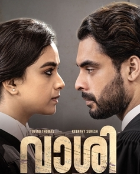

MOVIE GALLERY
HRIDAYAM
PLOT:Arun Neelakandan, a teenager from Kerala, joins KC Tech, a popular engineering college in Chennai for his graduation. He falls in love with college sweetheart Darshana at the first sight.Arun, a young man, enrols in an engineering college but falls prey to bad habits. As he grows up, he decides to turn over a new leaf and become a responsible adult.
Release date:21 January 2022
Director:Vineeth Sreenivasan
Cast:Pranav Mohanlal , Kalyani Priyadarshan
Language:Malaylam
IMDb:8.1/10

KADUVA
PLOT:Kaduva is also the story of the misuse of official machinery to settle personal scores, and the fact that some of it happened in real life makes it even more shocking. Jinu V. Abraham's script does not attempt to spring any surprises, rather it banks fully on the strength of the mass scenes, of which there are some.
Release date:7 July 2022
Director:Shaji Kailas
Cast:Prithviraj Sukumaran,Vivek Oberoi
Language:Malaylam
IMDb:6.1/10

VAASHI
PLOT:The movie is successful in portraying our justice system which may appear to be fair and objective, but has a very subjective and personal level of interference at least subconsciously. Overall, Vaashi is an engaging courtroom drama, with Tovino Thomas and Keerthy Suresh playing their roles convincingly.
Release date:17 June 2022
Director:M.R. Joseph
Cast:Keerthi Suresh,
Tovino Thomas
Language:Malaylam
IMDb:6.4/10
BHEESHMA PARVAM
PLOT:Bheeshma Parvam Story: Micheal helms his influential family in Kochi, inspiring fear and respect through his unnerving past. When a few younger members in the household feel his power over their lives too are aggravating, they join hands with foes to clamp down on him. And the story follows what's in store for them
Release date:3 March 2022
Director:Amal Neerad
Cast:Mammootty,
Nadhiya
Language:Malaylam
IMDb:7.7/10
HRIDAYAM
PLOT:Arun Neelakandan, a teenager from Kerala, joins KC Tech, a popular engineering college in Chennai for his graduation. He falls in love with college sweetheart Darshana at the first sight.Arun, a young man, enrols in an engineering college but falls prey to bad habits. As he grows up, he decides to turn over a new leaf and become a responsible adult.
Release date:21 January 2022
Director:Vineeth Sreenivasan
Cast:Pranav Mohanlal , Kalyani Priyadarshan
Language:Malaylam
IMDb:8.1/10